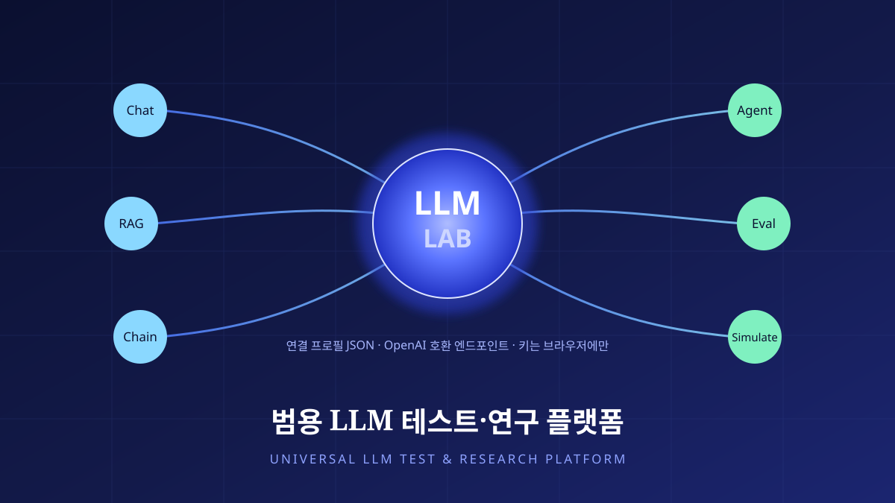
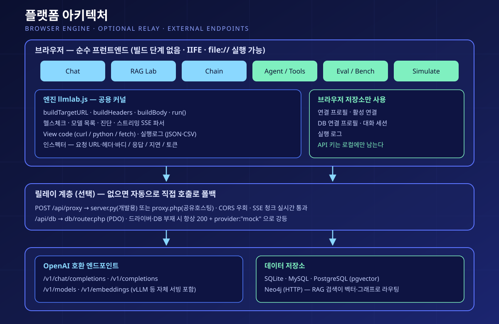
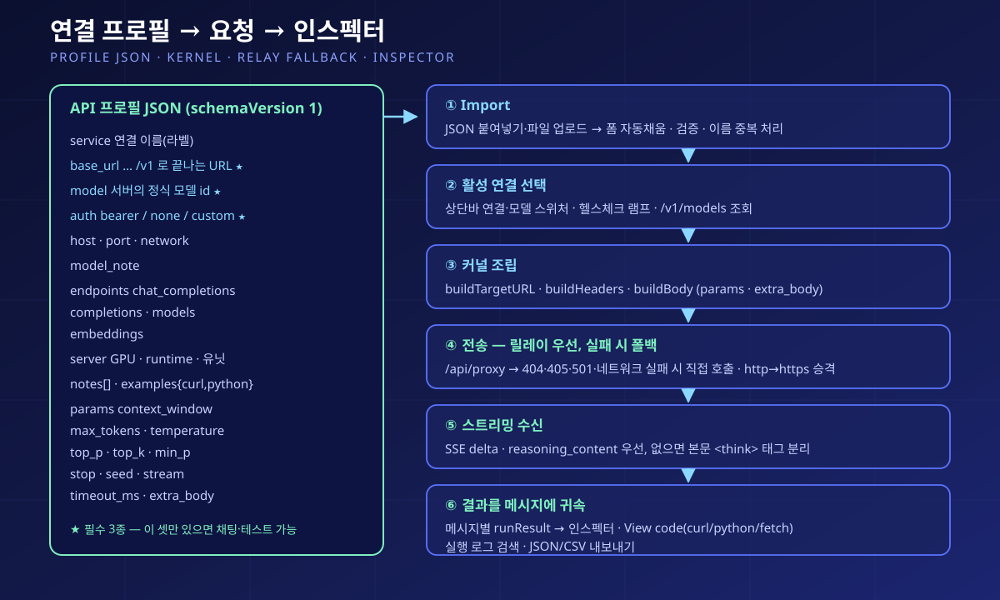

LLM Lab — Universal LLM Test & Research Platform
LLM Lab — 범용 LLM 테스트·연구 플랫폼



A pure-frontend research platform that connects to any LLM server exposing an OpenAI-compatible API through a single connection-profile JSON, with no vendor lock-in. There is no build tool and no framework — opening index.html runs it — and API keys and connection details never leave the user's browser storage.
Six workbenches — Chat, RAG Lab, Chain, Agent/Tools, Eval/Bench and Simulate — sit on one shared kernel, so conversation, retrieval-augmented generation, prompt chaining, tool calling, A/B evaluation and model-versus-model simulation can be compared under the same connection and the same parameters. Every request opens in the inspector with its URL, headers, body, response, latency and token usage, and the same request can be exported as curl, python or fetch code. It began in July 2026 as a single-model chatbot web app, pivoted to a general-purpose platform in August, and is published as MIT-licensed open source.
Structure · Design
플랫폼은 세 겹이다. ① 브라우저 — index.html 하나로 부팅하는 순수 프런트엔드다. 빌드 단계가 없고 모듈 시스템 대신 IIFE로 감싸 전역 네임스페이스로 노출하므로 file:// 로 열어도 동작한다. 엔진 llmlab.js가 공용 커널을 제공해 buildTargetURL · buildHeaders · buildBody · run 네 단계로 모든 요청을 조립하고, 헬스체크·모델 목록 조회·진단, 스트리밍 SSE 수신, View code(curl·python·fetch) 생성, 실행 로그(검색·JSON/CSV 내보내기)를 담당한다. 연결 프로필·DB 연결·대화 세션·실행 로그는 모두 브라우저 저장소에만 보관한다. ② 릴레이 계층(선택) — 브라우저가 교차 출처 제약에 걸리는 경우를 대비해 POST /api/proxy 릴레이를 둔다. 개발용 server.py와 공유호스팅용 proxy.php 두 구현이 같은 응답 규약을 지켜 업스트림 상태 코드를 그대로 미러링하고 SSE 청크를 버퍼링 없이 흘려보낸다. 릴레이가 없는 정적 배포에서는 404·405·501·네트워크 실패를 감지해 직접 호출로 자동 폴백하고, https 페이지에서는 http 주소를 https로 승격해 혼합 콘텐츠를 피한다. ③ 데이터 계층(선택) — db.js와 PHP 라우터(PDO 기반)가 SQLite·MySQL·PostgreSQL(pgvector)·Neo4j(HTTP)를 /api/db 아래로 묶고, RAG 검색이 벡터·그래프 질의를 이 경로로 라우팅한다. 확장 모듈이나 DB가 없어도 서버는 죽지 않고 항상 200과 provider:"mock" 으로 강등하도록 응답 계약을 고정했다.
워크벤치는 여섯이다. Chat은 다중 대화 세션(생성·전환·이름변경·삭제)과 상단바 연결·모델 스위처를 갖추고, 메시지마다 어떤 호스트의 어떤 모델이 답했는지 배지로 표시하며 실행 결과를 메시지 단위로 귀속해 모델을 바꿔 가며 대화해도 각 답변의 인스펙터가 자기 요청을 가리킨다. 추론(reasoning) 출력은 delta의 reasoning_content를 우선 쓰고, 없으면 본문의 <think>…</think> 구간을 스트림 청크 경계에서도 안전하게 분리한다. RAG Lab은 청킹(fixed·sentence·recursive) → 임베딩 → 검색(Vector·BM25·Hybrid) → 재랭킹 → 컨텍스트 → 생성으로 이어지는 파이프라인을 카드로 펼치고, 어휘 검색과 밀집 검색을 RRF(Reciprocal Rank Fusion)로 융합하며 GraphRAG의 local·global 검색을 함께 다룬다. Chain은 Prompt·Transform(JS)·Condition·RAG·Tool·Merge 노드를 세로 흐름으로 잇는 선형 체인 러너로, 중간 산출물 열람과 부분 재실행, 체인 정의 JSON 내보내기·가져오기를 지원하고 CoVe·Step-Back·Least-to-Most·Map-Reduce·Plan-and-Solve·Self-Consistency·Skeleton-of-Thought·ToT-lite·Evaluator-Optimizer 등 20종의 프롬프트 체이닝 프리셋을 난이도별로 묶어 제공한다. Agent/Tools는 JSON Schema 툴 정의 에디터로 tools·tool_choice를 실제로 전송하고 tool_call을 파싱해 mock 응답을 재주입하며, 스텝 가드를 둔 ReAct 루프와 실행 트레이스 타임라인을 보여 준다. Eval/Bench는 A/B 병렬 비교, N회 반복 분포, 단어·줄 단위 diff, 순서를 무작위로 바꾸고 양방향으로 채점해 위치 편향을 보정하는 LLM-as-judge, 데이터셋 배치와 자동 지표·내보내기를 제공한다. Simulate는 페르소나·목표·종료조건을 지정한 멀티턴 시나리오에서 모델 대 모델 자동 대화를 돌리고 턴별 지표를 남긴다.
연결은 별도 문서로 형식을 못 박은 API 프로필 JSON(schemaVersion 1)으로 관리한다. base_url(끝에 /v1) · model · auth.api_key 셋만 있으면 즉시 채팅과 테스트가 되고, service · host · port · network · model_note · endpoints · server(GPU·VRAM·런타임·서비스 유닛) · notes · examples(curl·python) 같은 나머지 필드는 표시·진단용 메타데이터다. params에는 context_window · max_tokens · temperature · top_p · top_k · min_p · repetition_penalty · presence/frequency_penalty · stop · seed · stream · timeout_ms와, vLLM류 서버 확장 인자를 격리하는 extra_body를 담는다. 프로필은 단일 객체와 profiles[] 묶음 양쪽을 가져올 수 있고, 편집기에 JSON을 붙여넣으면 폼이 자동으로 채워지며 감지 결과와 오류를 함께 리포트한다. 내보내기에는 키를 자리표시자로 치환하는 옵션을 두어 공유용 프로필에서 비밀값을 뺀다. 형식 문서에는 다른 AI 세션이 새로 띄운 모델 서버의 접속 정보를 이 스키마 그대로 출력하도록 지시하는 규칙까지 담아, 서버를 올린 쪽과 시험하는 쪽을 JSON 한 장으로 잇는다.
보조 기능으로 DuckDuckGo 웹 검색 프록시와 출처 카드, 매 요청 현재 시각 주입, Mermaid 다이어그램·수식·코드 하이라이트 렌더링, HTML/SVG 코드블록의 샌드박스 iframe 미리보기, 명령 팔레트, 다크·라이트 테마, 좁은 폭까지 커버하는 반응형 레이아웃을 갖췄다. 배포 갱신이 브라우저 캐시에 막히는 문제를 없애려고 로컬 에셋을 실행 시각 쿼리로 순서를 보존한 채 런타임 주입하고 no-cache 메타와 서버 헤더를 함께 걸어, 이후에는 파일을 덮어쓰기만 해도 최신본이 반영된다. 스택은 바닐라 HTML·CSS·JavaScript에 선택적 PHP(공유호스팅) 또는 Python 개발 서버이며, 마크다운·새니타이즈·하이라이트 라이브러리는 CDN에서 불러온다. 라이선스는 MIT.
Design goals
출발점은 2026년 7월의 단일 모델 챗봇 웹앱이었다. 자체 서빙한 vLLM 엔드포인트에 붙는 대화형 UI를 만들고 웹 검색·모델 전환·경고 배너·반응형을 차례로 붙여 공개 배포까지 갔다. 그 과정에서 되풀이된 것은 기능 개발이 아니라 '모델을 갈아 끼우는 일'이었다 — 주소가 바뀌고, 모델 id가 바뀌고, 인증 방식이 바뀔 때마다 코드를 고쳐야 했다. 8월에 방향을 틀어 하드코딩된 API 설정을 전부 걷어내고 연결을 코드가 아니라 사용자가 가져오고 내보내는 프로필 데이터로 승격시킨 것이 이 플랫폼의 시작이다. 목표는 세 가지였다. 첫째, 벤더 종속 없이 OpenAI 호환이기만 하면 무엇이든 붙는 것 — 상용 API든 사내에서 띄운 vLLM이든 같은 프로필 스키마로 다룬다. 둘째, 키를 남의 서버에 맡기지 않는 것 — 순수 프런트엔드로 만들어 키와 연결 정보가 사용자의 브라우저를 벗어나지 않게 했고, 공유용 내보내기에서는 키를 지운다. 셋째, 무슨 일이 일어났는지 감추지 않는 것 — 프레임워크가 요청을 대신 조립해 주는 편의 대신, 실제로 나간 URL·헤더·바디와 돌아온 응답·지연·토큰을 인스펙터에 그대로 펼치고 같은 요청을 curl·python·fetch로 복제할 수 있게 했다. 연구 도구는 재현되지 않으면 쓸모가 없기 때문이다.
빌드 단계를 두지 않은 것도 같은 이유다. 번들러 없이 파일 하나를 열면 되고, 정적 호스팅에 그대로 올라가며, 프록시가 없는 환경에서는 직접 호출로 스스로 물러선다. 반대로 CORS 우회나 실제 DB가 필요한 환경에서는 PHP 파일 몇 개만 얹으면 릴레이와 데이터 계층이 붙는다 — 있으면 쓰고 없으면 강등하는 이 설계 덕분에 같은 코드가 로컬 파일·개인 서버·공유호스팅 어디서든 돌아간다. 워크벤치를 여섯으로 나눈 것은 LLM 실험이 실제로 나뉘는 결을 따른 것이다. 그냥 대화해 보는 일, 검색을 붙이는 일, 프롬프트를 여러 단계로 쪼개는 일, 툴을 쥐여 주는 일, 두 설정을 견주어 고르는 일, 모델끼리 부딪혀 보는 일. 이들을 각각 다른 도구로 흩어 놓는 대신 하나의 커널과 하나의 연결 위에 올려, 조건을 바꾼 실험들이 서로 비교 가능한 상태로 남게 하는 것이 설계의 중심이었다.
공개 배포를 준비하면서는 저장소에 남아 있던 실제 도메인·모델 id·API 키·내부 호스트 정보를 전부 걷어내고, 기본 시드 없이 연결 0개 상태로 시작하도록 바꾼 뒤 남은 비밀값이 없는지 다시 검사해 MIT 라이선스로 공개했다. 이 프로젝트의 초기 계보인 대화 UI는 비검열(abliterated) 모델을 공개 시연하는 페이지로 지금도 남아 있으며, 그때 마주한 논점은 저널의 별도 기고문에서 다뤘다.